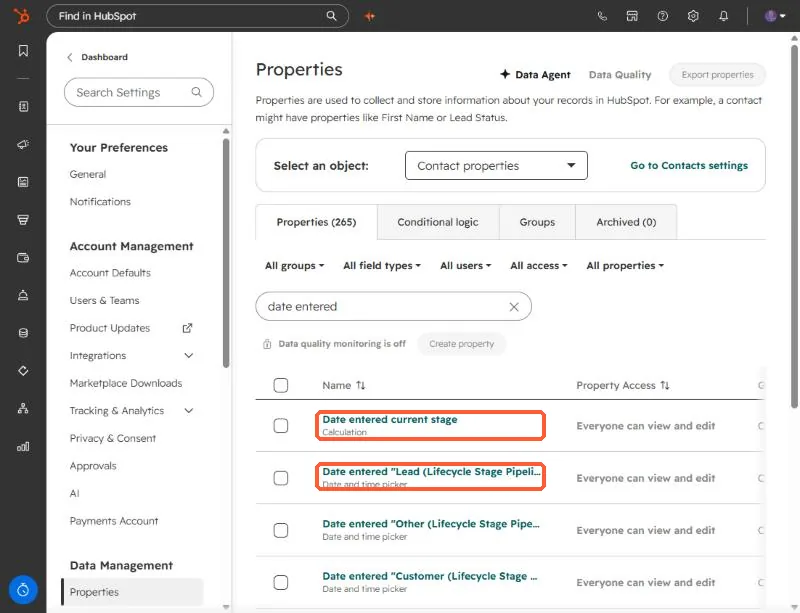
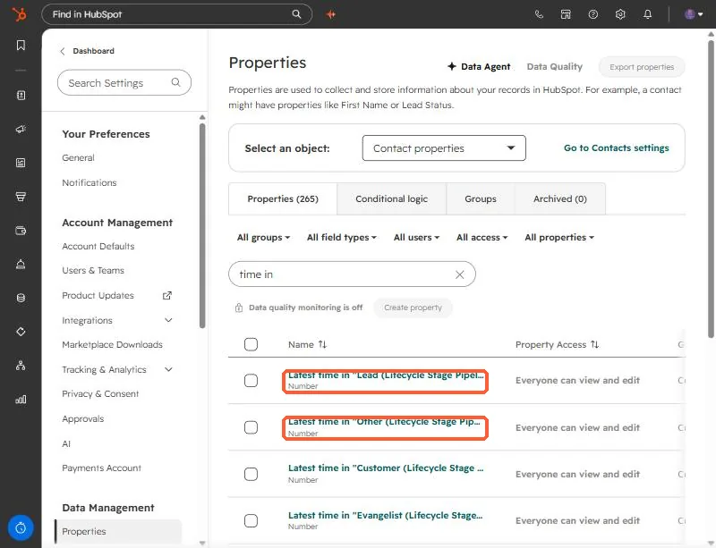

Short answer
HubSpot automatically creates a Date entered property and a Latest time in property for each lifecycle stage, plus Date entered current stage. They fill themselves as records move. If you are designing a customer journey model and about to add custom date fields for each stage, check these first. In a portal where I was mapping a journey model, they replaced seven custom date fields.
1. Search for "date entered"
Open Contact properties and search date entered. You will see Date entered current stage (a calculation) and one date and time property per stage, named like Date entered "Lead (Lifecycle Stage Pipeline)".


2. Search for "time in"
The matching duration properties are named Latest time in "Lead (Lifecycle Stage Pipeline)" and so on. They are number properties, so you can filter and report on how long records spent in each stage.


3. Where this saves work
- Journey and funnel models. If your model has stages that line up with lifecycle stages, you do not need custom date fields for them. The timestamps already exist.
- Segments. Filter on Date entered for a stage to list everyone who became a Lead last month.
- Reports. Time in stage works as a number in custom reports.
These properties follow the lifecycle stage property. If your team does not keep lifecycle stage current, the timestamps will not move either. See why SQL reports show zero.
Also note that company records have their own lifecycle stage and their own set of properties. Check the company property list separately.